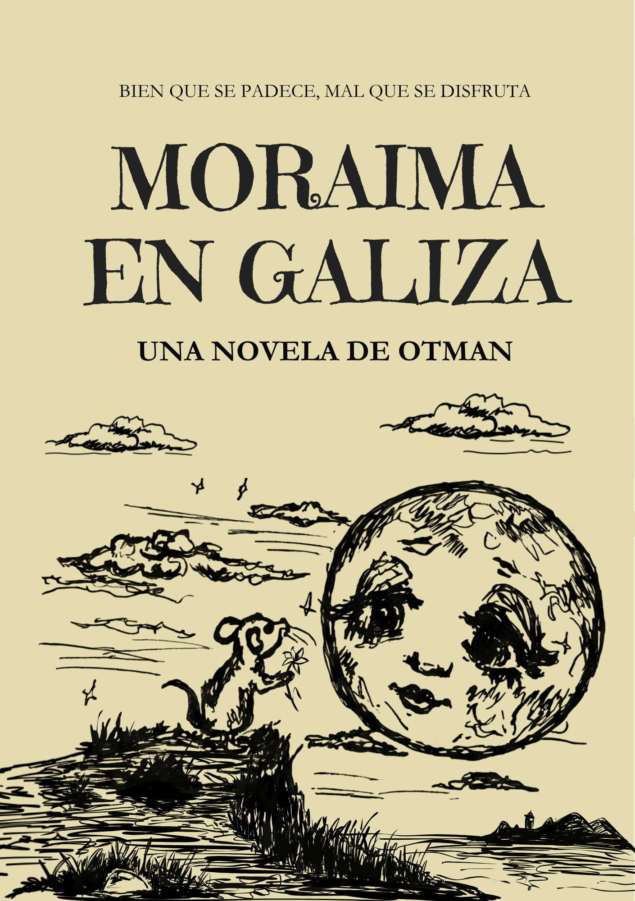

Es más fácil escapar de los cuerpos que de los versos.

Hay noches en que escribir es la única forma de no enloquecer del todo, y esta novela nació en una de esas noches interminables. La escribí para sostener un nombre que, de tanto repetirlo, dejó de pertenecerme a mí y empezó a pertenecerle al destino.
No voy a explicarte la trama, porque explicarla sería traicionarla. Moraima en Galiza no se lee sin más: se padece, como reza la portada, y —mal que nos pese a los dos— también se disfruta.
Un formato breve para una obsesión que, te lo aseguro, no lo es en absoluto. Se devora rápido y se queda contigo mucho después, como esas voces que no se callan aunque cierres los ojos.
No elegí un escenario: elegí un lugar donde perderme de verdad, con la misma desesperación con que se busca lo que ya se ha perdido. Ese lugar existe, y aquí se recorre como quien recorre una leyenda propia.
La escribí como quien escribe una carta que sabe, desde la primera línea, que no tendrá respuesta: con la poesía por delante y la razón muy, muy por detrás. Así soy yo, para bien y para mal.
No busco un lugar. Busco a alguien a través de los lugares, con esa fe ciega de quien cree que el destino deja pistas si uno sabe mirar bien. Y Galicia, que no perdona a nadie, tampoco me lo puso fácil a mí.
"Este no es el camino", me dijeron nada más llegar. Seguí de todas formas, porque detenerme habría sido peor que seguir equivocado.
Hay nombres tallados en piedra desde hace más tiempo del que llevan vivos quienes los buscan, y aun así seguimos buscándolos, como si la piedra pudiera respondernos algo que las personas ya no pueden.
Entre lirios creí, por fin, alcanzar aquello que llevaba años persiguiendo. Creí. Esa es, quizá, la palabra que más me ha costado entender en toda mi vida.
Un hombre que ha convertido su vida entera en una carta interminable, porque nombrar es la única forma que conoce de no perderlo todo del todo. Sospecho que se parece bastante a mí, aunque prefiero no confirmarlo.
Un nombre que, de tanto repetirse, deja de ser solo un nombre y se convierte en algo parecido a una plegaria. No voy a decir más: eso se siente, no se explica.
Grabado junto al de ella en una piedra mucho más vieja que cualquiera de los dos. De él sé lo mismo que sabrás tú: casi nada. Y ese casi nada pesa como si fuera todo.
Aparece, deja un número escrito en un papel, y se va, como si ya conociera el final de esta historia. Reconoce en Othello algo que ya ha visto antes.
Escribo desde la certeza de que algunos versos persiguen más tiempo del que dura la persona que los inspiró, y esa certeza, lejos de consolarme, me ha perseguido también a mí. No sé todavía si esto es literatura o es confesión, y llevo tiempo prefiriendo no saberlo. Moraima en Galiza es, sencillamente, lo que queda cuando uno se cansa de nombrar en silencio.
No te prometo que la disfrutes sin más, porque ni yo sé aún si esto se disfruta o simplemente se vive. Prometo, eso sí, que si eres de los míos, no la vas a soltar hasta la última página.